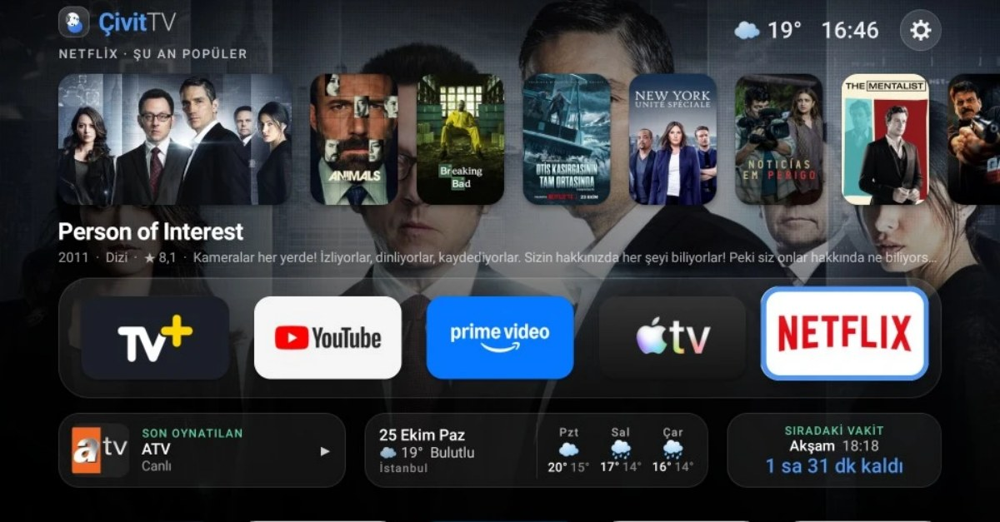

ÇivitTV
An Apple TV 4K-style home screen for Android TV, plus PowerShell scripts that debloat Android TV devices. Built for a Xiaomi Mi Box S, with a Turkish UI and English fallback.
What it does
- Dock of favourite apps: a frosted-glass row you can reorder, hide apps from or uninstall from with the remote.
- Shelf above the focused app, like tvOS Top Shelf: recent and popular live channels for TV+, popular titles on Netflix, Prime Video, Disney+ and more from TMDB, and recently played media in other apps.
- Info strip: what's playing now, today's weather plus the next three days, and the next prayer time with a countdown.
- Prayer-time notices over any app, pausing whatever is playing.
- Remote "mouse mode" that gives phone-only apps an on-screen pointer you move with the arrow keys.